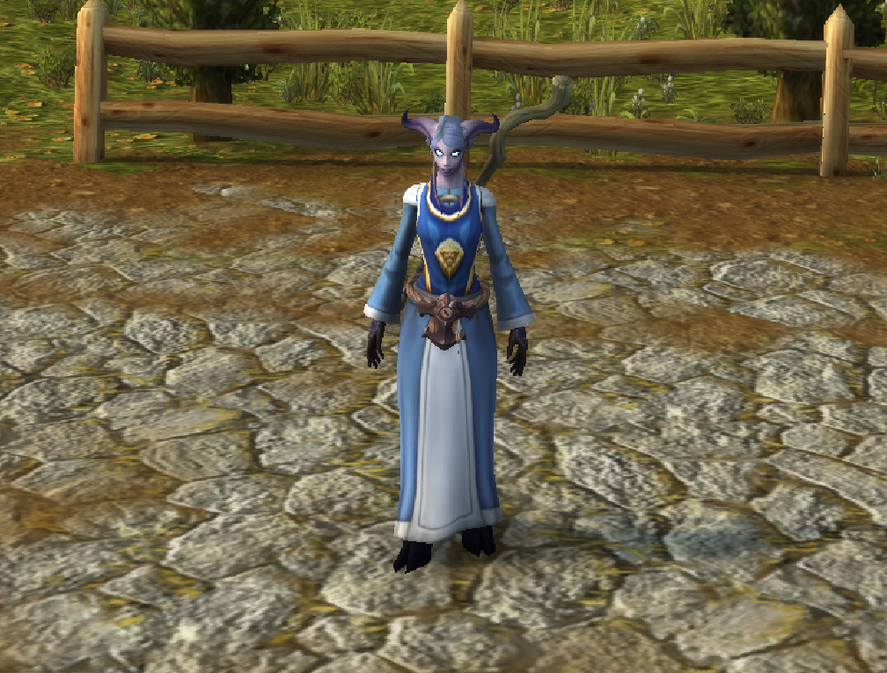

“The Familiar and the Foreign” and “World of Warcraft as a Playground for Feminism”
Two of the readings in the World of Warcraft reader discussed the impact of race and feminism on the player’s experience in the game. In Jessica Langer’s “The Familiar and the Foreign”, she explores how race plays into players having the opportunity to choose between two different groups: the Alliance and the Horde. In class, we talked about how nearly every single player chose to join the alliance faction (myself included) even though it doesn’t have a huge impact on how you play the game. Most people didn’t have a strong answer - some people shrugged. We couldn’t even necessarily state exactly what it is that drew us to the Alliance. This reading encouraged us to look at our biases towards things that seem “familiar”, rather than things that seem “foreign”. Many of the character types in World of Warcraft draw on specific cultures in the real world, bringing race into a place that it doesn’t have to be.
In Hilde G. Corneliussen’s piece “World of Warcraft as a Playground for Feminism”, they talk about how gender appears in the game both for the character avatars and in the gameplay. While there are many different races and both female and male options for all of the races, each of the female characters have somewhat exaggerated appearance characteristics such as narrow waists and a lack of huge muscles. The male characters tend to be a lot bigger and bulkier, which I viewed as a probable advantage. My character was a female arcane mage and she didn't look very strong. In a game about fighting, I found that when I was face to face with a huge avatar, I assumed that they had more strength than me (which is how it works in the real world). However, I soon realized that my assumption wasn’t necessarily true. Even though my character was small, she had gained lots of magic powers that could take out others regardless of their character’s size. Corneliussen makes the point that we should think about why the female characters must look small and weak despite it not actually having an effect on the game play. In addition to the avatar, Corneliussen talks about how more women play games than we’re led to believe, despite the stereotypes from media like video game advertising and the South Park episode about World of Warcraft.

My character in World of Warcraft.